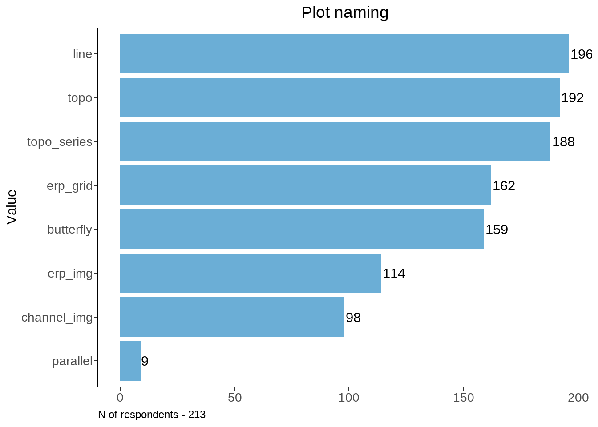
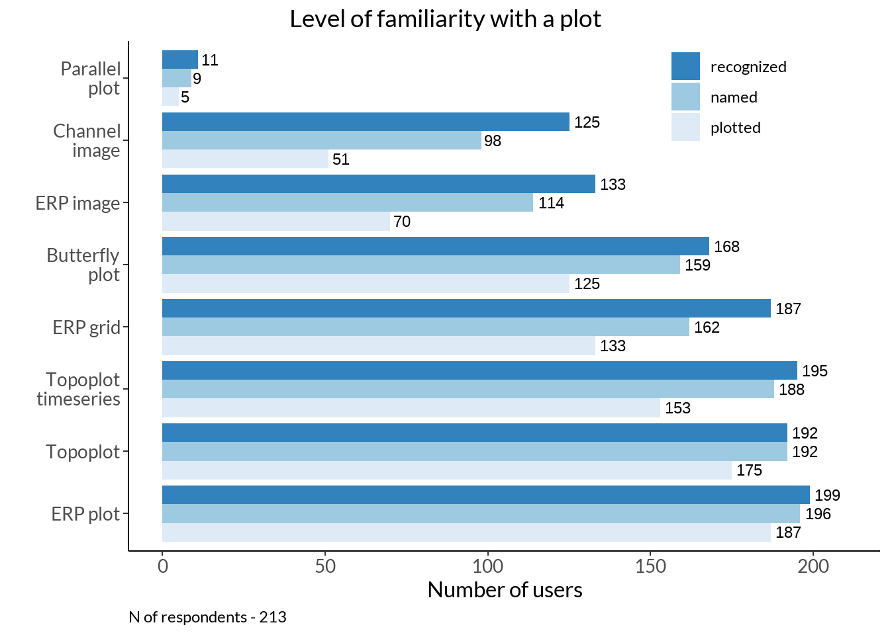
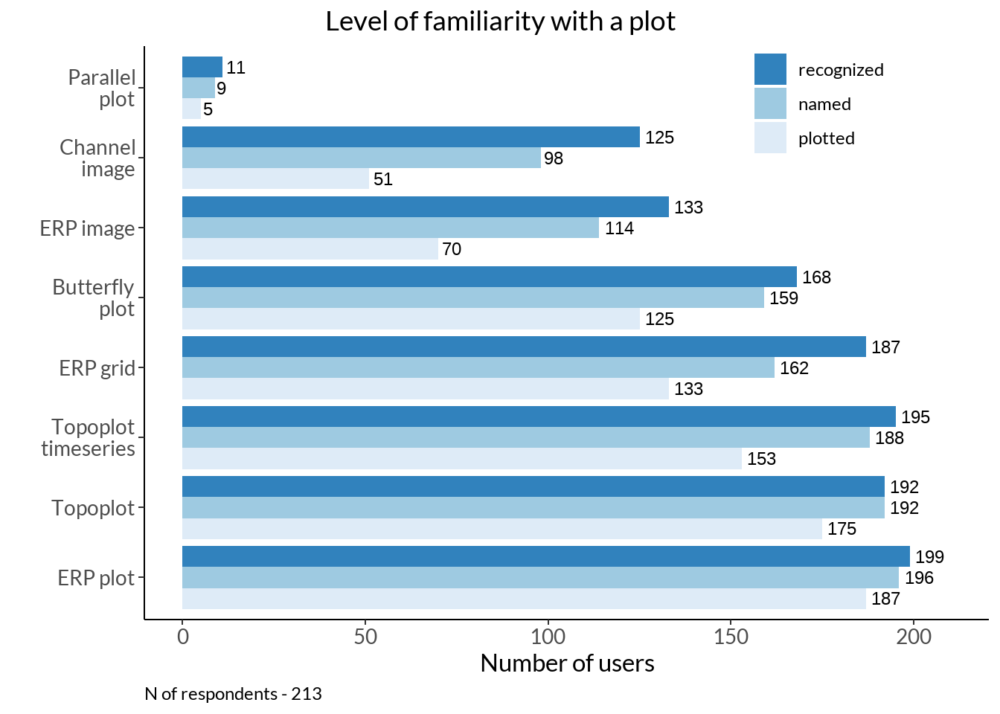
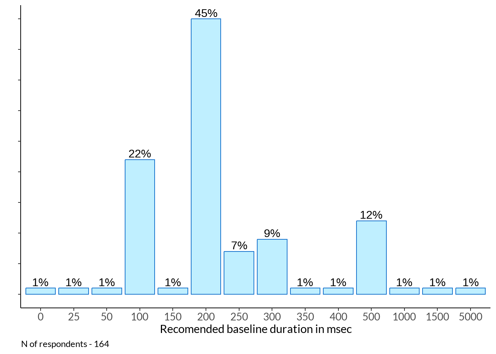
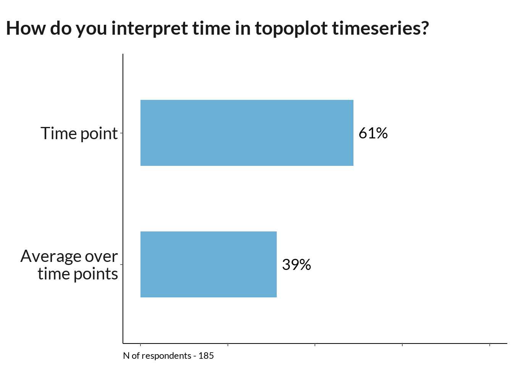
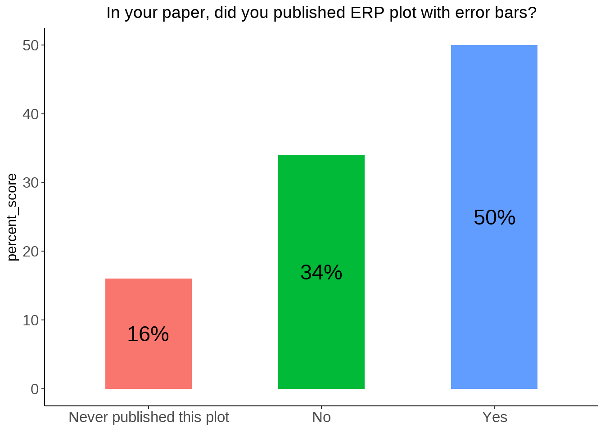
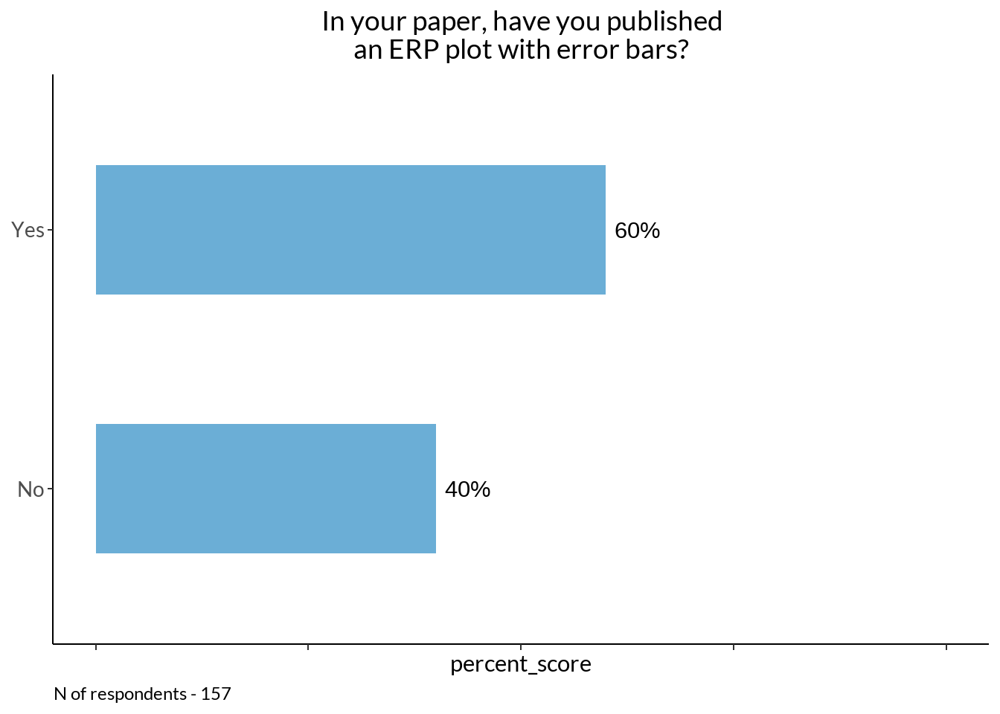
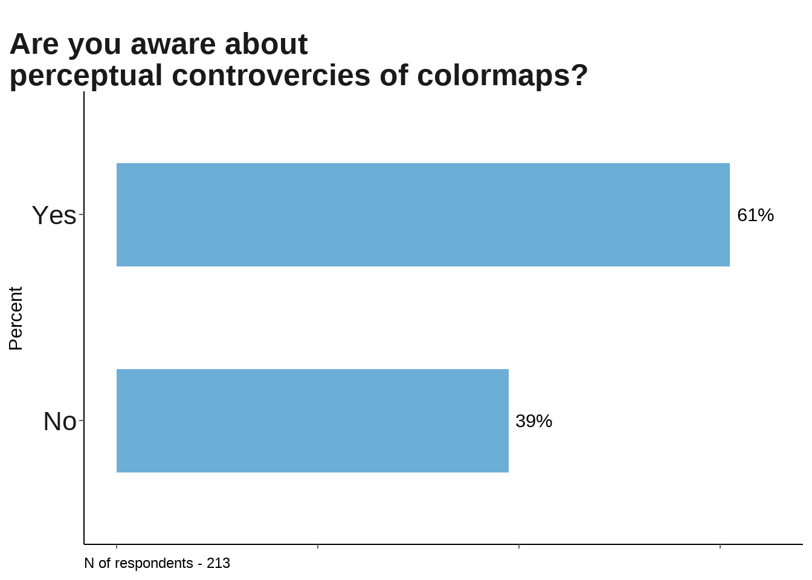

Code
data <- read_excel("data/results-survey.xlsx")
data <- data[1:121] %>%
filter(.[[18]] !='Yes') # not analysed any EEG methodHere we present researcher’s visualization customs and awareness about some methodological problems.
data <- read_excel("data/results-survey.xlsx")
data <- data[1:121] %>%
filter(.[[18]] !='Yes') # not analysed any EEG methodvec <- c("line", "butterfly", "topo", "topo_map", "topo_array", "erp_image", "parallel", "channel_image")
familiar <- data[61:68] %>% rename_at(vars(colnames(.)), ~ vec) %>%
mutate_at(vars(vec), function(., na.rm = FALSE) (x = ifelse(.=="Yes", 1, 0)))
rec <- data.frame(rowSums(t(familiar))) %>% tibble::rownames_to_column(., "plot") %>%
rename_at(vars(colnames(.)), ~ c("plot", "sum_scores")) %>%
arrange(., desc(sum_scores))
rec %>%
ggplot(data = ., aes(y = reorder(plot, sum_scores), x= sum_scores)) +
geom_col(stat="identity", fill ="lightblue1", col="dodgerblue3") + ylab("plot") + theme_classic() +
geom_text(aes(label = sum_scores, group = plot), position = position_dodge(width = .9), hjust = -0.1) +
theme(legend.position="none", plot.title = element_text(hjust = 0.5)) +
labs(y = "Plot types", x = "Scores") +
ggtitle("Select plots you are familiar with") +
labs(caption = sprintf("N of respondents - %d", nrow(familiar))) +
theme(legend.position="none", plot.caption.position = "plot", plot.caption = element_text(hjust=0), axis.text = element_text(size = 10))
Those who named a plot somehow. Bad namings are excluded.
word_preproc <- function(vec){
#N = 70
tmp <- vec %>% filter(!is.na(.)) %>%
dplyr::rename(words = !!names(.)[1]) %>% mutate(words = tolower(words)) %>%
mutate(words = ifelse(nchar(words) < 3, paste(words, "baddd"), words)) %>%
mutate(check =
ifelse(grepl("\\b(baddd|idea|sure|confus|aware|do not|know|why|good|remember|unsure|confusing|mess|unclear|ugly|don't|useless|nan|clear)\\b", words), "bad", "good"))
return(tmp)
}
#word_preproc(data[vec_named[7]]) %>% View()vec_named <- names(data[ , grepl( "How would you " , names(data))])
plot_names <- c("line", "butterfly", "topo", "topo_map", "topo_array", "erp_img", "parallel", "channel_img")
na_table <- function(data, vec_named, plot_names){
temp <- data.frame(plot_names)
temp$n <- NA
for (i in 1:8){
n_part <-
data[vec_named[i]] %>% word_preproc(.) %>% #View()
filter(check != "bad") %>%
dplyr::summarise(n = n())
temp$n[i] <- n_part$n
}
#temp <- temp[2:length(temp)]
#colnames(temp) <- plot_names
return(temp)
}
num_named <- na_table(data, vec_named, plot_names)
num_named %>%
ggplot(., aes(x = n, y = reorder(plot_names, n))) +
geom_col(stat="identity", fill ="lightblue1", col="dodgerblue3") +
labs(x = "Category", y = "Value") +
theme_classic() + theme(axis.title.x=element_blank(), plot.title = element_text(hjust = 0.5)) +
geom_text(aes(label = n), position = position_dodge(width = .9), hjust = -0.1) +
ggtitle("Plot naming") +
labs(caption = sprintf("N of respondents - %d", nrow(familiar))) +
theme(legend.position="none", plot.caption = element_text(hjust=0), axis.text = element_text(size = 10))
familiar <- data[61:68] %>% rename_at(vars(colnames(.)), ~ plot_names) %>%
mutate_at(vars(plot_names), function(., na.rm = FALSE) (x = ifelse(.=="Yes", 1, 0))) %>%
t() %>% rowSums(.) %>% data.frame(.) %>% tibble::rownames_to_column(., "plot") %>%
rename_at(vars(colnames(.)), ~ c("plots", "recognized"))plot_vec <- rev(c("Parallel\nplot", "Channel\nimage", "ERP image", "Butterfly\nplot", "ERP grid", "Topoplot\ntimeseries", "Topoplot", "ERP plot"))
vec_plotted <- names(data[ , grepl( "Have you ever plotted " , names(data))])
do_vec <- function(vec_plotted, data, plot_names){
t1 <- table(data[vec_plotted[1]])
for (i in 2:length(vec_plotted)) {
t <- table(data[vec_plotted[i]])
t1 <- rbind(t1, t)
}
rownames(t1) <- plot_names
return(t1)
}
tab <- do_vec(vec_plotted, data, plot_names) %>% data.frame() %>% tibble::rownames_to_column(., "plots") %>%
gather(., type, plotted, `N.A`:`Yes`, factor_key=TRUE) %>%
filter(type == "Yes") %>% dplyr::select(-type)
named <- num_named %>% dplyr::rename(named = n, plots = plot_names) mem_tab <- familiar %>%
rename_at(vars(colnames(.)), ~ c("plots", "recognized")) %>%
left_join(., named) %>% left_join(., tab)
mem_tab %>% #filter(plots != "parallel") %>%
gather(., type, score, recognized:plotted, factor_key=TRUE) %>%
ggplot(., aes(x = score, y = reorder(plots, -score), fill = reorder(type, score))) +
geom_bar(position = "dodge", stat = "identity") +
labs(y = "", x = "Number of users", fill = "Level of\nfamiliarity\nwith plot") +
theme_classic() +
geom_text(aes(label = score, group = reorder(type, score)), position = position_dodge(width = .9), hjust = -0.2, size = 3) +
theme(plot.title = element_text(hjust = 0.5)) +
#ggtitle("Familiarity with plots") +
xlim(0, 210) + #scale_fill_grey(start = 0.8, end = 0.2) +
scale_fill_brewer(palette = "Blues") +
guides(fill = guide_legend(reverse=T)) +
theme(plot.caption = element_text(hjust=0), axis.text = element_text(size = 10)) +
scale_y_discrete(labels = plot_vec) #+
labs(caption = sprintf("N of respondents - %d", nrow(familiar)))$caption
[1] "N of respondents - 8"
attr(,"class")
[1] "labels"How many channels do you typically measure?
chs <- data %>% dplyr::rename(channels = !!names(.)[23]) %>% filter(channels < 10000)
chs %>%
ggplot(data = ., aes(x = channels)) + ylab("Counts") +
geom_histogram(bins=300) + scale_x_continuous(breaks=seq(0, 300, 30)) +
labs(x ="How many channels do you typically measure?") + theme_classic() +
labs(caption = sprintf("N of respondents - %d", nrow(chs))) +
theme(legend.position="none", plot.caption = element_text(hjust=0), axis.text = element_text(size = 10))
How many channels do you typically analyse?
chs <- data %>% filter(.[[24]] < 500)
chs %>% ggplot(data = ., aes_(as.name(names(data)[24]))) +
geom_histogram(bins=300) + scale_x_continuous(breaks=seq(0, 300, 30))+
labs(x ="How many channels of those you measured do you typically analyse?") + theme_classic() +
labs(caption = sprintf("N of respondents - %d", nrow(chs))) +
theme(legend.position="none", plot.caption = element_text(hjust=0), axis.text = element_text(size = 10))
Combined version
cv <- data %>% select(23, 24) %>%
rename_at(vars(colnames(.)), ~ c("measure", "analyse")) %>% filter(measure < 10000,analyse < 500)
cv %>%
gather(key=Type, value=Value) %>%
ggplot(aes(x=Value, fill=Type)) +
geom_histogram(bins=300, position="stack") + labs(x ="Number of channels", y = "Count") +
theme_classic() +
labs(caption = sprintf("N of respondents - %d", nrow(cv))) +
theme(legend.position="none", plot.caption = element_text(hjust=0), axis.text = element_text(size = 10))
cv <- data %>% select(23, 24) %>%
rename_at(vars(colnames(.)), ~ c("measure", "analyse")) %>%
filter(measure < 10000, analyse < 500) %>%
mutate(rate = round(analyse / measure, 2))
cv %>% group_by(rate) %>% dplyr::summarise(n = n()) %>%
mutate(p = round(n / sum(n), 2)) %>%
ggplot(aes(x=rate, y = p)) +
geom_col(position = "identity", bins=300, fill ="lightblue1", colour ="dodgerblue3") +
labs(x ="Ratio of electrodes analysed / measured", y = "") +
theme_classic() +
theme(legend.position="none", plot.caption = element_text(hjust=0), axis.text = element_text(size = 10)) + ylim(0, 0.4) +
scale_x_continuous(labels = scales::percent) + scale_y_continuous(labels = scales::percent, limits = c(0, 0.4)) +
labs(caption = sprintf("N of respondents - %d", nrow(cv))) cv %>% dplyr::select(rate) %>% group_by(rate) %>% dplyr::summarise(n = n()) %>%
mutate(p = round(n / sum(n), 2)) %>% arrange(desc(n))# A tibble: 43 × 3
rate n p
<dbl> <int> <dbl>
1 1 78 0.38
2 0.16 12 0.06
3 0.06 10 0.05
4 0.19 9 0.04
5 0.25 9 0.04
6 0.08 8 0.04
7 0.94 6 0.03
8 0.02 5 0.02
9 0.05 5 0.02
10 0.09 5 0.02
# ℹ 33 more rowsna.omit(data[51]) %>% nrow()[1] 22other <- c(rep("Custom scripts",each=9), "4DBTi", rep("letswave", 3), "mTRF", "RAGU", "IGOR Pro", "EEGProcessor", "ELAN", "WinEEG") %>% table(.) %>% data.frame(.) %>% rename_at(vars(colnames(.)), ~ c("soft", "sum_scores"))vec <- names(data[25:50]) %>% str_split_i(., "\\? \\[", 2) %>% str_sub(., 1, -2)
software <- data[25:50] %>%
rename_at(vars(colnames(.)), ~ vec) %>%
mutate_at(vars(vec), function(., na.rm = FALSE) (x = ifelse(.=="Yes", 1, 0))) %>%
cbind(., data[51] %>% rename_at(vars(colnames(.)), ~ c("other"))) %>% mutate(other = case_when(
grepl("\\b(letswave)\\b", other, ignore.case = TRUE) == TRUE ~ "Letswave",
grepl("\\b(r|matlab|python|ggplot(2)?|own)\\b", other, ignore.case = TRUE) == TRUE ~ "Custom scripts",
grepl("\\bnever\\b", other, ignore.case = TRUE) == TRUE ~ NA_character_,
TRUE ~ as.character(other)
)) %>%
mutate(cs = ifelse(other == "Custom scripts", other, NA_character_),
other2 = ifelse(other != "Custom scripts", other, NA_character_)) %>%
mutate(`Custom scripts` = case_when(
cs == "Custom scripts" ~ as.numeric(1),
TRUE ~ as.numeric(`Custom scripts`)
)) %>%
mutate(Letswave = case_when( #gross
other2 == "Letswave" ~ as.numeric(1),
TRUE ~ as.numeric(0)
)) %>% dplyr::select(-cs, -other, -other2) # next time I also will extend other 2 too
d <- data.frame(rowSums(t(software))) %>% tibble::rownames_to_column(., "soft") %>%
rename_at(vars(colnames(.)), ~ c("soft", "sum_scores")) %>%
filter(sum_scores != 0) %>%
mutate(soft = ifelse(sum_scores > 8, as.character(soft), "Other")) %>% group_by(soft) %>%
dplyr::summarise(sum_scores = sum(sum_scores)) %>% ungroup() %>%
mutate(percent_score = round(sum_scores / nrow(software) * 100)) %>%
mutate(soft = factor(soft, levels = soft[rev(order(sum_scores))]))tools <- rev(c("EEGLAB", "FieldTrip", expression(italic("Custom scripts")), "MNE-Python", "ERPLAB", "Brain Vision Analyser",
expression(italic("Other")), "Brainstorm", "SPM", "LIMO", "Unfold", "BESA", "Curry", "Cartool"))
d %>%
ggplot(data = ., aes(y = reorder(soft, percent_score), x= percent_score)) +#, fill = soft)) +
geom_bar(stat="identity", fill ="lightblue1", colour ="dodgerblue3") + labs(x= "", y="Analytical tools") +
geom_text(aes(label = paste0(percent_score, "%")),
hjust = -0.2, size = 4) +
theme_classic() + theme(legend.position="none", axis.text.y = element_text(size = 14)) +
theme(legend.position="none", plot.caption.position = "plot",
plot.caption = element_text(hjust=0), axis.text.x = element_blank(), axis.text = element_text(size = 10)) +
xlim(0, 68) +
scale_y_discrete(labels = tools)#+
labs(caption = sprintf("N of respondents - %d", nrow(software)))$caption
[1] "N of respondents - 213"
attr(,"class")
[1] "labels"Soft frequency among thoses who used only one software
ns <- cbind(data.frame(rowSums(software), software)) %>%
filter(rowSums.software. == 1) %>% dplyr::select(-rowSums.software.)
data.frame(rowSums(t(ns))) %>%
tibble::rownames_to_column(., "soft") %>%
rename_at(vars(colnames(.)), ~ c("soft", "sum_scores")) %>%
arrange(., desc(sum_scores)) %>% filter(sum_scores != 0) soft sum_scores
1 MNE.Python 11
2 EEGLAB 9
3 FieldTrip 8
4 Brain.Vision.Analyser 2
5 Custom.scripts 2
6 ERPLAB 1
7 SPM. 1
8 Unfold 1nu_med <- data.frame(rowSums(software)) %>% dplyr::rename(n_soft = rowSums.software.) %>% summarise(median_n_soft = median(n_soft)) %>% as.numeric()
data.frame(rowSums(software)) %>% dplyr::rename(n_soft = rowSums.software.) %>%
ggplot(data = ., aes(n_soft)) +
geom_histogram(bins = 45) + scale_x_continuous(breaks=seq(0, 30, 1)) +
labs(x ="Number of software used", y="Count") +
theme_classic() + theme(legend.position="none", axis.text.x = element_text(size = 12)) +
labs(caption = sprintf("N of respondents - %d, median - %d", nrow(software), nu_med)) +
theme(legend.position="none", plot.caption = element_text(hjust=0), axis.text = element_text(size = 10)) 
# how to order by diagonal matrix
# how to add others
software <- data[25:50]
d1 <- foreach(i = colnames(software)) %do% ifelse(software[i]=="Yes", 1, 0)
c <- crossprod(matrix(unlist(d1), ncol = 26))
rownames(c) <- colnames(software) %>% str_split_i(., "\\? \\[", 2) %>% str_sub(., 1, -2)
colnames(c) <- rownames(c)
diag.order <- order(diag(c), decreasing = FALSE)
mat_reordered <- c[diag.order, diag.order]
mat_reordered %>% melt(.) %>% ggplot(., aes(x=Var1, y=Var2)) +
geom_tile(aes(fill = value)) +
geom_text(aes(label = value)) +
scale_fill_gradient(low = "white", high = "red") +
theme(legend.title = element_blank(),
axis.title=element_blank(),
axis.text.x = element_text(angle = 90, vjust = 1, hjust=1)) +
labs(caption = sprintf("N of respondents - %d", nrow(software))) +
theme(legend.position="none", plot.caption.position = "plot", plot.caption = element_text(hjust=0), axis.text = element_text(size = 10)) zero_rows <- rowSums(mat_reordered) == 0
zero_cols <- colSums(mat_reordered) == 0
# Create a new matrix array without the rows and columns consisting only of zeroes
new_matrix <- mat_reordered[!zero_rows, !zero_cols]
melt(new_matrix) %>% ggplot(., aes(x=Var1, y=Var2)) +
geom_tile(aes(fill = value)) +
geom_text(aes(label = value)) +
scale_fill_gradient(low = "white", high = "red") +
theme(legend.title = element_blank(),
axis.title=element_blank(),
axis.text.x = element_text(angle = 90, vjust = 1, hjust=1)) +
labs(caption = sprintf("N of respondents - %d. Zero rows are excluded", nrow(software))) +
theme(legend.position="none", plot.caption.position = "plot", plot.caption = element_text(hjust=0), axis.text = element_text(size = 10)) 
feature <- data[52:60] %>% rename_all(., ~str_split_i(colnames(data[52:60]), "\\? \\[", 2) %>%
str_sub(., 1, -2) ) %>%
mutate_at(c(colnames(.)),
funs(recode(.,
"Very important"= 2, "Important"= 1, "Neutral"= 0,
"Low importance"= -1, "Not at all important" = -2 )))
feature %>%
colSums(., na.rm =T) %>% data.frame(.) %>% tibble::rownames_to_column(., "Feature") %>%
filter(!is.na(Feature)) %>%
arrange(desc(.)) %>% rename_at(vars(colnames(.)), ~ c("Feature", "sum_scores")) %>% group_by(Feature) %>%
dplyr::mutate( mean = round(sum_scores / nrow(data), 2)) %>% kbl(escape = F, booktabs = T) %>%
kable_styling("striped", position = "center",) %>% kable_classic(full_width = F, html_font = "Arial")| Feature | sum_scores | mean |
|---|---|---|
| Flexible tweaking of plot attributes (colors, linewidths, margins etc.) | 325 | 1.53 |
| Reproducibility of interactively generated or modified plots | 256 | 1.20 |
| Generating plots by coding | 253 | 1.19 |
| Presentation/publication ready figures | 249 | 1.17 |
| Zooming or panning within a plot | 125 | 0.59 |
| Combine with a custom plot created outside of the toolbox (as subplot or inset) | 121 | 0.57 |
| Speed of plotting | 96 | 0.45 |
| Interactive selection of time-ranges or electrodes e.g. via Sliders or Dropdown menus | 81 | 0.38 |
| Generating plots by clicking (GUI) | -72 | -0.34 |
feature1 <- feature %>%
pivot_longer(cols = everything(), names_to = "name", values_to = "value") %>%
mutate(index = as.integer(factor(name))) %>%
filter(!is.na(value))
#feature %>% distinct(., index, name) %>% arrange(., index)
feature1 %>% #filter(index %in% c(2, 6, 7, 4)) %>%
ggplot() +
geom_density(aes(x = value, fill = str_wrap(name)), bw = 0.5) +
labs(x = "score", fill="Features") + theme_classic() +
theme(legend.position = "none", legend.key.height=unit(2, "cm")) + facet_wrap(~str_wrap(name, 20))
feature1 %>% filter(index %in% c(2, 6, 7, 4)) %>%
ggplot() +
geom_density(aes(x = value, color = str_wrap(name, 20)), bw = 0.5) +
labs(x = "score", color = "Features") + theme_classic() +
theme(legend.position = "none",
legend.key.height=unit(2, "cm"),
axis.text.x = element_text(size = 12),
strip.text = element_text(size = 14)) +
facet_wrap(~str_wrap(name, 20)) + labs(x="Scores on Likert scale", y="Density") 
f1 <- feature1 %>% filter(index %in% c(2, 6, 7, 4)) %>%
ggplot() +
stat_density(aes(x = value, color = str_wrap(name, 20)),
geom="line", position="identity", bw = 0.5, size = 1) +
labs(x = "score", color = "Features") + theme_classic() +
theme(
legend.key.height=unit(1, "cm"),
legend.text = element_text(color = "black"),
axis.text = element_text(size = 14),
strip.text = element_text(size = 14)) +
labs(x="Scores on Likert scale", y="Density")
f1
f2 <- feature1 %>% filter(index %in% c(8, 9)) %>%
ggplot(aes(x = value, color = str_wrap(name, 20))) +
geom_line(stat = "density", bw = 0.5, size = 1) +
labs(x = "score", color ="Features") + theme_classic() +
theme(
legend.key.height=unit(1, "cm"),
legend.text = element_text(color = "black"),
axis.text = element_text(size = 14),
strip.text = element_text(size = 14)) +
labs(x="Scores on Likert scale", y="Density")
f2f3 <- feature1 %>% filter(index %in% c(1, 3, 5)) %>%
ggplot(aes(x = value, color = str_wrap(name, 20))) +
geom_line(stat = "density", bw = 0.5, size = 1) +
labs(x = "score", color ="Features") + theme_classic() +
theme(
legend.key.height=unit(1, "cm"),
legend.text = element_text(color = "black"),
axis.text = element_text(size = 14),
strip.text = element_text(size = 14)) +
labs(x="Scores on Likert scale", y="Density")
f3 
plot_features <- c(
"Combine with a custom plot created outside of the toolbox (as subplot or inset)",
"Flexible tweaking of plot attributes (colors, linewidths, margins etc.)",
"Speed of plotting",
"Presentation/publication ready figures",
"Reproducibility of interactively generated or modified plots",
"Zooming or panning within a plot",
"Interactive selection of time-ranges or electrodes e.g. via Sliders or Dropdown menus",
"Generating plots by clicking (GUI)",
"Generating plots by coding"
)
comb_data <- feature1 %>%
mutate(gr = case_when(
index %in% c(1, 3, 5) ~ 'Mixed',
index %in% c(8, 9) ~ 'Moderate',
index %in% c(2, 6, 7, 4) ~ 'Favored')) %>%
mutate(name = case_when(
name == "Combine with a custom plot created outside of the toolbox (as subplot or inset)" ~ "Inset",
name == "Flexible tweaking of plot attributes (colors, linewidths, margins etc.)"~ "Flexible",
name == "Speed of plotting"~ "Speed",
name == "Presentation/publication ready figures"~ "Publicable",
name == "Reproducibility of interactively generated or modified plots"~ "Reproducable",
name == "Zooming or panning within a plot"~ "Zooming",
name == "Interactive selection of time-ranges or electrodes e.g. via Sliders or Dropdown menus"~ "Interactive",
name == "Generating plots by clicking (GUI)"~ "GUI",
name == "Generating plots by coding" ~ "Coding"
))
comb <- comb_data %>%
ggplot(aes(x = value, label = name, color = str_wrap(name, 20))) +
geom_line(stat = "density", bw = 0.5, size = 1) +
labs(x = "score", color = "Features") +
theme_classic() +
theme(
legend.key.height = unit(1, "cm"),
legend.text = element_text(color = "black"),
legend.title = element_blank(),
legend.position = "none",
strip.background = element_blank(),
axis.text = element_text(size = 14),
strip.text = element_text(size = 14),
panel.grid.major.x = element_blank(),
panel.grid.major.y = element_line(linetype = "dashed"),
panel.grid.minor.y = element_blank(),
panel.grid.minor.x = element_blank(),
) +
labs(x = "Scores on Likert scale", y = "Density") +
facet_wrap(~gr)p <- ggplot_build(comb)
# These are the columns of interest
#p$data[[1]]$x
#p$data[[1]]$density
test <- aggregate((value) ~ name, data = comb_data, function(x) last(density(x, bw = 0.5)$y)) %>%
cbind(., aggregate((value) ~ name, data = comb_data, function(x) max(density(x, bw = 0.5)$x))[,2]) %>%
rename_at(vars(colnames(.)), ~ c("name", "denymax", "denxmax")) %>%
mutate(gr = case_when(
grepl("\\b(GUI|Interactive|Inset)\\b", name) == TRUE ~ "Mixed",
grepl("\\b(Speed|Zooming)\\b", name) == TRUE ~ "Moderate",
grepl("\\b(Coding|Flexible|Reproducable|Publicable)\\b", name) == TRUE ~ "Favored",
))cbPalette <- c("#e3342f", "#f6993f", "#f1a20b", "#38c172", "#3490dc", "#6574cd", "#9561e2", "#4dc0b5", "#f66d9b")
comb + geom_label_repel(data = test, aes(label = name, x = denxmax, y = denymax, group = gr ) ,
nudge = 45) + scale_color_manual(values=cbPalette) +
labs(caption = sprintf("N of respondents - %d", nrow(feature))) 
# comb + geom_label_repel(aes(label = name, y = round(after_stat(density), 2)),
# stat = 'density', bw = .5,
# n = 1, nudge = 45
# )comb + theme(legend.position = "bottom"
)
t <- foreach(i = 1:nrow(data)) %do% tokenize_words(as.character(data[i, 11]))
tt <- foreach(i = 1:length(t)) %do% paste(unlist(t[i]), collapse = ' ')
area1 <- data.frame(matrix(tt)) %>% dplyr::rename(words = !!names(.)[1]) %>%
mutate(words = ifelse(str_detect(.[[1]], 'emot|empathy'), "affective neuroscience", words)) %>%
mutate(words =ifelse(str_detect(.[[1]], 'memory'), "memory", words)) %>%
mutate(words =ifelse(str_detect(.[[1]], 'hearing|audit'), "auditory", words)) %>%
mutate(words =ifelse(str_detect(.[[1]], 'cognitive load|selective attention|attention|cognition|consciousness|meditation|cognitive control|self|executive functions'), "cognitive control and attention", words)) %>%
mutate(words =ifelse(str_detect(.[[1]], 'dbs'), "deep brain stimulation", words)) %>%
mutate(words =ifelse(str_detect(.[[1]], 'decision making|reward'), "decision making", words)) %>%
mutate(words =ifelse(str_detect(.[[1]], 'ageing'), "ageing", words)) %>%
mutate(words =ifelse(str_detect(.[[1]], 'social'), "social cognition", words)) %>%
mutate(words =ifelse(str_detect(.[[1]], 'olfac'), "olfaction", words)) %>%
mutate(words =ifelse(str_detect(.[[1]], 'communication|language|speech|biling|english|language processing'), "language and speech", words)) %>%
mutate(words =ifelse(str_detect(.[[1]], 'bci'), "bci", words)) %>%
mutate(words =ifelse(str_detect(.[[1]], 'sleep'), "sleep", words)) %>%
mutate(words =ifelse(str_detect(.[[1]], 'timing|time|temporal'), "time", words)) %>%
mutate(words =ifelse(str_detect(.[[1]], 'perception'), "perception", words)) %>%
mutate(words =ifelse(str_detect(.[[1]], 'vis'), "vision", words)) %>%
mutate(words =ifelse(str_detect(.[[1]], 'developmental|development|ageing'), "development", words)) %>%
mutate(words =ifelse(str_detect(.[[1]], 'spatial|brain body|motor|motion'), "motor control", words)) %>%
mutate(words =ifelse(str_detect(.[[1]], 'diagnostics|disorder|psychiatry|epilepsy|autism|patients|therapy|psychopharmacology'), "mental disorders", words)) %>%
mutate(words =ifelse(str_detect(.[[1]], 'signal processing|event related potentials|method|sdf|ieeg'), "dsp", words))
area <- area1 %>%
mutate(words = ifelse(str_detect(.[[1]], 'olfaction|vision|auditory|pain'), "perception", words))%>%
mutate(words = ifelse(str_detect(.[[1]], 'dsp|computational neuroscience'), "methodology", words)) %>%
mutate(words = ifelse(str_detect(.[[1]], 'mental disorders|deep brain stimulation'), "clinical", words))%>%
mutate(words = ifelse(str_detect(.[[1]], 'social cognition'), "affective neuroscience", words))colours = c("#f9a65a", "#599ad3")
ud <- table(data[79]) %>% data.frame() %>%
rename_at(vars(colnames(.)), ~ c("position", "scores")) %>%
mutate(percent_score = round(scores / sum(scores) * 100))
ud %>%
ggplot(., aes(y = position, x = percent_score)) + #, fill = as.factor(percent_score))) +
geom_bar(position = "dodge", stat = "identity", width=0.5, fill ="lightblue1", colour ="dodgerblue3") +
theme_classic() +
theme(axis.title=element_blank(),
legend.position="none", axis.text.x = element_blank(),
axis.text = element_text(size = 12),
plot.title = element_text(hjust = 0.5)) +
geom_text(aes(label = paste0(percent_score, "%"), group = position), hjust = -0.2,
#position = position_stack(vjust = 0.5)
) +
ggtitle("In ERP plot, should positive voltages be plotted upwards, or downwards?") +
scale_fill_manual(values=colours) + xlim(0, 83) +
theme(legend.position="none", plot.caption = element_text(hjust=0), axis.text = element_text(size = 10)) +
labs(caption = sprintf("N of respondents - %d", sum(ud$scores))) 
as <- cbind(unlist(area$words), unlist(data[[79]])) %>% data.frame() %>%
filter(.[[2]] != "NANA") %>% dplyr::rename(area=X1, ud=X2) %>%
group_by(area) %>%
filter(n() > 2) %>% group_by(area, ud) %>% dplyr::summarise(n = n()) %>%
group_by(area) %>% dplyr::mutate(nn = sum(n)) %>% filter(area != "")
as %>%
ggplot(., aes(x = n, y = reorder(area, nn), fill = ud)) +
geom_col(stat = "identity", width = 0.5) +
labs(x = "Count", y = "", fill ="Positive:") +
geom_text(aes(label = n, #paste0(n, "%"),
group = ud),
position = position_stack(vjust = 0.5)) +
theme(plot.title = element_text(hjust = 0.5),
axis.text = element_text(size = 12),
axis.title = element_text(size = 14, face = "bold"),
legend.title = element_blank(),
axis.title.y=element_blank()
) +
theme_classic() +
scale_fill_manual(values=colours) +
theme(legend.position="right", plot.caption.position = "plot", plot.caption = element_text(hjust=0), axis.text = element_text(size = 10)) #+
labs(caption = sprintf("N of respondents - %d", sum(as$n)))$caption
[1] "N of respondents - 188"
attr(,"class")
[1] "labels"table(data[74]) %>% data.frame() %>% rename_at(vars(colnames(.)), ~ c("position", "Scores")) %>%
filter(position != "Never published this plot") %>% mutate(sum = sum(Scores)) position Scores sum
1 No 63 157
2 Yes 94 157table(data[74]) %>% data.frame() %>% rename_at(vars(colnames(.)), ~ c("position", "Scores")) %>% mutate(percent_score = round(Scores / sum(Scores) * 100)) %>%
ggplot(., aes(x = position, y = percent_score, fill = as.factor(percent_score))) +
geom_bar(position = "dodge", stat = "identity", width=0.5) + theme_classic() +
theme(axis.title.x=element_blank(),
legend.position="none",
axis.text = element_text(size = 12),
plot.title = element_text(hjust = 0.5)) +
geom_text(aes(label = paste0(percent_score, "%"), group = position), position = position_stack(vjust = 0.5), size = 6) +
ggtitle("In your paper, did you published ERP plot with error bars?")
Never published - throw them away
eb <- table(data[74]) %>% data.frame() %>% rename_at(vars(colnames(.)), ~ c("Position", "Scores")) %>%
filter(Position != "Never published this plot") %>%
mutate(percent_score = round(Scores / sum(Scores) * 100))
eb_fig <- eb %>%
ggplot(., aes(y = Position, x = percent_score)) + #, fill = as.factor(percent_score))) +
geom_bar(stat = "identity", width=0.5, position = "dodge", fill ="lightblue1", colour ="dodgerblue3") + theme_classic() +
theme(axis.title.x=element_blank(), axis.text.x = element_blank(),
legend.position="none",
axis.text = element_text(size = 12),
plot.title = element_text(hjust = 0.5)) +
geom_text(aes(label = paste0(percent_score, "%"), group = Position), #position = position_stack(vjust = 0.5),
hjust = -0.2) +
ggtitle("In your paper, have you published\nan ERP plot with error bars?")+
scale_fill_manual(values=colours) +
theme(legend.position="none", plot.caption = element_text(hjust=0), axis.text = element_text(size = 10)) + xlim(0, 70) + labs(y = "")
eb_fig +
labs(caption = sprintf("N of respondents - %d", sum(eb$Scores)))
ebd <- data[75] %>% filter(!is.na(.)) %>% table() %>% data.frame() %>% rename_at(vars(colnames(.)), ~ c("position", "scores")) %>% mutate(percent_score = round(scores / sum(scores) * 100)) %>% filter(position != "Other")
ebd_fig <- ebd %>%
ggplot(., aes(y = position, x = percent_score)) + #, fill = as.factor(percent_score))) +
geom_bar(position = "dodge", stat = "identity", width=0.5, fill ="lightblue1", colour ="dodgerblue3") + theme_classic() +
theme(axis.title.x=element_blank(), axis.text.x = element_blank(),
legend.position="none",
plot.title = element_text(hjust = 0.5)) + ylab("") +
geom_text(aes(label = paste0(percent_score, "%"), group = position), hjust = -0.2) +
#position = position_stack(vjust = 0.5),
#size = 6
ggtitle("In your figure,\nwhat did the error bars represent?")+
scale_fill_manual(values=colours) + scale_y_discrete(labels = c("Standard error\nof the mean", "Confidence\ninterval")) +
theme(plot.caption = element_text(hjust=0), axis.text = element_text(size = 10)) + xlim(0, 80)
ebd_fig +
labs(caption = sprintf("N of respondents - %d", sum(ebd$scores))) 
ggarrange(eb_fig, ebd_fig,
labels = c("A", "B"),
ncol = 2, nrow = 2, align = 'h') 
data[76] %>% filter(!is.na(.)) %>% table()G03Q15[other]. What did the error bars depict in your figure? [Other]
-
1
68% CI, which is close to SEM under normality
1
95% ci over channel means
1
i'm not sure but i think it was sem
1
I don't remember
1
median absolute deviaton or quantiles
1
NA
1
Sd
1
SEM, corrected for within-participant design
1 Think about the baseline period (the time before the stimulus onset). How many milliseconds would you recommend to plot? Help: Please, provide the baseline duration for the plot, not the duration for the baseline-correction
# If you don't want to provide a number on previous question, please, provide a justification
# depends on what??
# manual categorization of depending
j <- data %>%
dplyr::rename(q = !!names(.)[78]) %>% filter(!is.na(q)) %>% dplyr::select(q) %>%
mutate(q = tolower(q)) %>% mutate(q = gsub('depends in|depending on', 'depends on', q),
dependson = ifelse(grepl("depends|depend", q), q, NA)) %>%
separate(dependson, into = c("a","b"), sep = "depends on |depend on ") %>%
dplyr::select(-a) %>%
dplyr::rename(dependson = b) #%>%
j %>% filter(!is.na(dependson)) %>% select(dependson)# A tibble: 37 × 1
dependson
<chr>
1 "the design of course"
2 "the topic"
3 "the study. if you have interstimulus interval of 1 second and you expect to…
4 "the experiment and research question"
5 "the rest period between the measured evoked responses. e.g. it can be very …
6 "the analysis"
7 "paradigm, 100-300 ms range preferable"
8 "the task design"
9 "the type of response (eg for mrcps response is seen before actual movement …
10 "the task design, paradigm and signal of interest."
# ℹ 27 more rowsj %>% filter(is.na(dependson)) %>% select(-dependson)# A tibble: 21 × 1
q
<chr>
1 minimum 200ms for erps and theta or beta power
2 should match the duration of baseline-correction
3 as a rule of thumb, i would plot at least 1/3 of the duration (post-stimulus…
4 half of the illustrated task interval
5 in general i would always try to plot the full baseline period used for base…
6 the same duration as the one used for baseline correction
7 at least 300, preferably more
8 put down 100, but that's just what i typically use, might be diff for differ…
9 at least the baseline window used for the baseline correction?
10 in this case it has sense as the -100 : 0 ms is not flat
# ℹ 11 more rows#j %>% write.csv(., "data/justification.csv")
#View()
just <- read.csv("data/justification.csv") %>% dplyr::select(group, num)
just2 <- just %>% filter(is.na(num)) %>% group_by(group) %>% dplyr::summarise(n = n())bl <- table(abs(just[2] %>% na.omit() %>% rbind(data[77] %>% dplyr::rename(num = !!names(.)[1]) , .))) %>% data.frame() %>% dplyr::rename(baseline = !!names(.)[1]) %>%
mutate(percent_score = round(Freq / sum(Freq), 2) *100)
bl %>%
ggplot(data = ., aes(x = baseline, y = percent_score)) +
geom_bar(stat="identity", fill ="lightblue1", colour ="dodgerblue3") +
labs(x = "Recomended baseline in msec", y = "") +
scale_y_continuous(breaks=seq(0, 60, 5)) + theme_classic() +
theme(legend.position="none", plot.title = element_text(hjust = 0.5)) +
geom_text(aes(label = paste0(percent_score, "%"), group = baseline), position = position_dodge(width = .9), vjust = -0.3) +
theme(legend.position="none", plot.caption = element_text(hjust=0), axis.text.y = element_blank(), axis.text = element_text(size = 10)) +
labs(caption = sprintf("N of respondents - %d", sum(bl$Freq)))
cb <- table(data[117]) %>% data.frame() %>% rename_at(vars(colnames(.)), ~ c("position", "scores"))
rbind(table(data[117]) %>% data.frame() %>%
rename_at(vars(colnames(.)), ~ c("answer", "scores")) %>%
mutate(questions = "Awareness about\ncontrovercies of\ncolorbars")%>%
mutate(percent_score = round(scores / sum(scores) * 100)),
table(data[118]) %>% data.frame() %>%
rename_at(vars(colnames(.)), ~ c("answer", "scores")) %>%
mutate(questions = "Awareness about\n2D colorbars") %>%
mutate(percent_score = round(scores / sum(scores) * 100))
) %>%
ggplot(., aes(x = percent_score, y = questions, fill = answer)) +
geom_col(stat = "identity", width = 0.5) +
geom_text(aes(label = paste0(percent_score, "%", "\n(", answer, ")")),
position = position_stack(vjust = 0.5), size = 4) +
theme_classic()+
theme(plot.title = element_text(hjust = 0.5),
axis.text = element_text(size = 12),
axis.title = element_text(size = 14, face = "bold"),
legend.position = "none",
legend.title = element_blank(),
axis.title.y=element_blank()
) +
scale_color_manual(values = c("#FF6666", "#66CC66")) +
scale_fill_manual(values = c("#FF6666", "#66CC66")) +
labs(x="Percent score") +
labs(caption = sprintf("N of respondents - %d", sum(cb$scores))) +
theme(legend.position="none", plot.caption.position = "plot", plot.caption = element_text(hjust=0), axis.text = element_text(size = 10)) 
cb %>%
mutate(percent_score = round(scores / sum(scores) * 100)) %>%
ggplot(., aes(y = position, x = percent_score)) + #, fill = as.factor(percent_score))) +
geom_bar(position = "dodge", stat = "identity", width=0.5, fill ="lightblue1", colour ="dodgerblue3") + theme_classic() +
theme(axis.title.x=element_blank(), axis.text.x = element_blank(),
legend.position="none",
axis.text = element_text(size = 12),
plot.title = element_text(hjust = 0.5)) + ylab("Percent") +
geom_text(aes(label = paste0(percent_score, "%"), group = position), hjust = -0.2) +
#position = position_stack(vjust = 0.5),
#size = 6
ggtitle("Are you aware about\nperceptual controvercies of colormaps?")+
scale_fill_manual(values=colours) +
theme(legend.position="none", plot.caption = element_text(hjust=0), axis.text = element_text(size = 10)) + xlim(0, 65) +
labs(caption = sprintf("N of respondents - %d", sum(cb$scores))) 
tdc <- table(data[119]) %>% data.frame() %>% rename_at(vars(colnames(.)), ~ c("position", "scores")) %>%
mutate(percent_score = round(scores / sum(scores) * 100))
tdc %>%
ggplot(., aes(y = position, x = percent_score, fill = as.factor(percent_score))) +
geom_bar(stat = "identity", width=0.5) + theme_classic() +
theme(axis.title.y=element_blank(),
legend.position="none",
axis.text = element_text(size = 12),
plot.title = element_text(hjust = 0.5)) + labs(x = "Scores") +
geom_text(aes(label = paste0(percent_score, "%") ,
group = position), position = position_stack(vjust = 0.5), size = 5) +
ggtitle("Would you like to use a two-dimensional colorbar\nin your publications, if it was easily available?") +
labs(caption = sprintf("N of respondents - %d", sum(tdc$scores))) +
theme(legend.position="none", plot.caption = element_text(hjust=0), axis.text = element_text(size = 10))